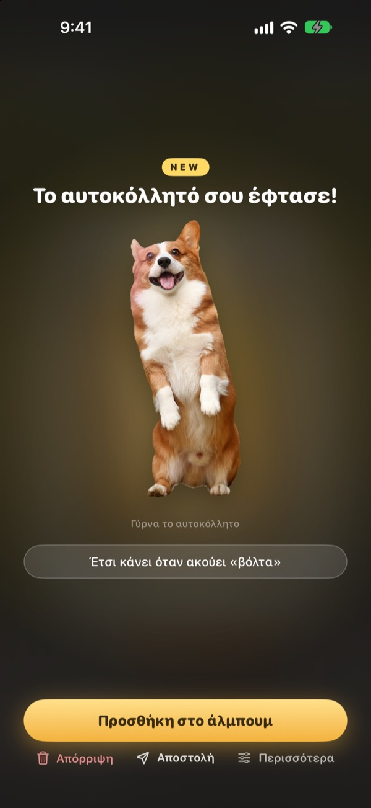
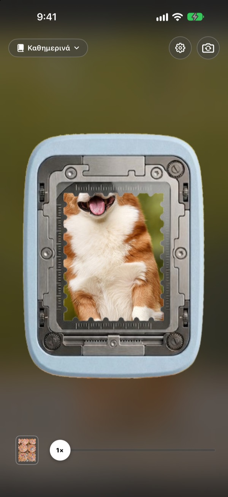
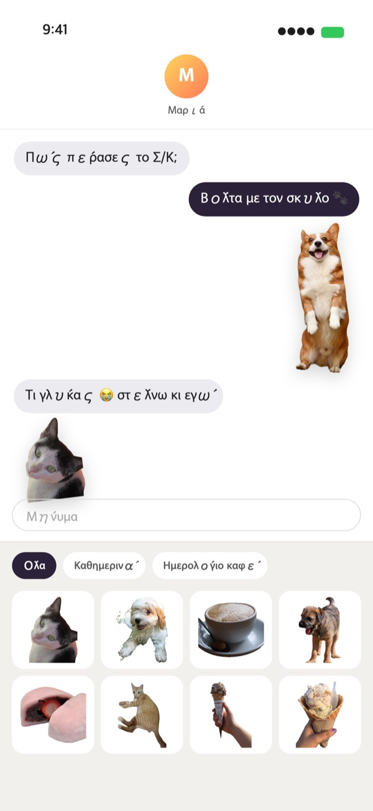
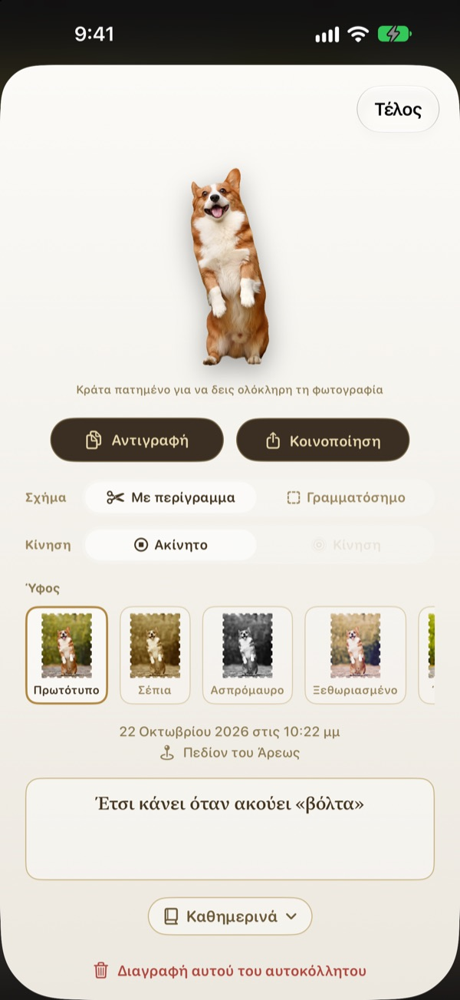
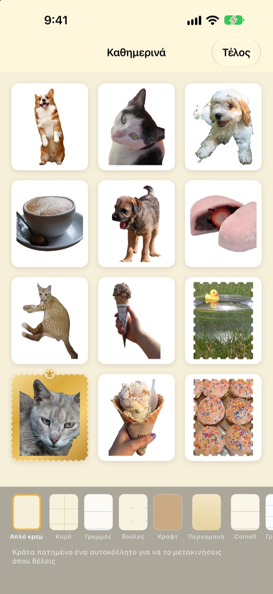

Κράτα πατημένο
και η στιγμή γίνεται αυτοκόλλητο
Στόχευσε τη σκηνή στο παράθυρο διάτρησης, κράτα πατημένο και άφησε. Ο σκύλος σου κόβεται ακριβώς στο περίγραμμά του, μαζί με τη σύντομη κίνηση λίγο πριν και λίγο μετά το πάτημα. Στείλ’ το αμέσως από τα Μηνύματα ή το πληκτρολόγιο.
Όλες οι λειτουργίες είναι δωρεάν. Τα αυτοκόλλητα και οι φωτογραφίες μένουν στη συσκευή σου.

Απόσπασε ένα αυτοκόλλητο
Διάλεξε μια σκηνή, κράτα πατημένο το κουμπί διάτρησης και άφησέ το. Μετά δοκίμασε άλλο σχήμα και άλλο ύφος.
Οι χαριτωμένες στιγμές αποκοιμιούνται στη βιβλιοθήκη φωτογραφιών
Πιάνεις τον σκύλο σου με τη γλώσσα έξω. Για να τον στείλεις ως αυτοκόλλητο, πρέπει να βρεις τη φωτογραφία, να την κόψεις και να ανοίξεις άλλη μια εφαρμογή αυτοκόλλητων. Ώσπου να γίνουν όλα αυτά, η συζήτηση έχει πάει αλλού. Το Punching αποσπά το αυτοκόλλητο εκεί που τραβάς τη φωτογραφία, και μόλις το κρατήσεις, βρίσκεται ήδη στο συρτάρι αυτοκόλλητων των Μηνυμάτων.
Το θέμα κομμένο, το τοπίο γραμματόσημο
Αν υπάρχει κάτι να κοπεί, όπως άνθρωπος, κατοικίδιο ή αντικείμενο, παίρνεις μόνο αυτό. Αν δεν υπάρχει, όπως σε ένα τοπίο, αποσπάται ως γραμματόσημο με οδοντωτή άκρη.
Η σύντομη κίνηση πριν και μετά το πάτημα έρχεται μαζί, έτσι το αυτοκόλλητο κινείται.

Κατευθείαν στα Μηνύματα και στο πληκτρολόγιο
Τα αυτοκόλλητα που αποσπάς εμφανίζονται στο συρτάρι αυτοκόλλητων των Μηνυμάτων. Ενεργοποίησε το πληκτρολόγιο Punching και θα τα διαλέγεις και θα τα επικολλάς και σε άλλες εφαρμογές.
Τα κινούμενα αυτοκόλλητα φτάνουν εν κινήσει. Κράτα πατημένο ένα αυτοκόλλητο για να το αντιγράψεις και επικόλλησέ το όπου θες.

Σχήμα και ύφος, και αργότερα
Άλλαξε όποτε θες ανάμεσα σε περίγραμμα και γραμματόσημο, ανάμεσα σε κίνηση και ακίνητη εικόνα. Η αρχική φωτογραφία μένει, οπότε όσες φορές κι αν αλλάξεις, όλα μένουν καθαρά όπως την πρώτη φορά.
Διάλεξε ύφος ανάμεσα σε Πρωτότυπο, Σέπια, Ασπρόμαυρο, Ξεθωριασμένο, Έντονο και Κυανό, και γράψε δυο λόγια, την ημερομηνία και το μέρος.

Μάζεψέ τα σε άλμπουμ, τύπωσέ τα σε χαρτί
Φτιάξε ένα άλμπουμ για κάθε θέμα και θα διαλέγεις άλμπουμ προς άλμπουμ και στα Μηνύματα και στο πληκτρολόγιο. Διάλεξε σελίδες όπως κραφτ, καρό, γραμμές ή περγαμηνή και βάλε τα αυτοκόλλητα στη σειρά που θες.
Μετάτρεψε ένα άλμπουμ σε PDF για εκτύπωση με γραμμές κοπής σε σχήμα γραμματοσήμου και τύπωσέ το κατευθείαν σε χαρτί αυτοκόλλητων.

Ξεκινάς σε τρία βήματα
- 1
Στόχευσε
Βάλε ό,τι θέλεις στο παράθυρο στη μέση της κάμερας.
- 2
Κράτα και άφησε
Τη στιγμή που αφήνεις, το αυτοκόλλητο αποσπάται.
- 3
Φύλαξε και στείλε
Πρόσθεσέ το σε ένα άλμπουμ και εμφανίζεται αμέσως στα Μηνύματα και στο πληκτρολόγιο.
Πού το χρησιμοποιείς, πού το αλλάζεις
- Μηνύματα
- ＋ δίπλα στο πεδίο κειμένου ▸ Αυτοκόλλητα ▸ Αυτοκόλλητα Punching
- Άλλες εφαρμογές
- Ενεργοποίησε το πληκτρολόγιο Punching, άλλαξε σε αυτό με το πλήκτρο της σφαίρας, διάλεξε και επικόλλησε
- Παντού
- Κράτα πατημένο ένα αυτοκόλλητο για αντιγραφή και μετά επικόλλησέ το
- Χάρτινα αυτοκόλλητα
- ⋯ στο άλμπουμ ▸ Χρήση ▸ Φύλλο αυτοκόλλητων προς εκτύπωση (PDF)
- Σελίδες και σειρά
- ⋯ στο άλμπουμ ▸ Διακόσμηση ελεύθερα
- Παλιές φωτογραφίες
- Εισαγωγή από Φωτογραφίες, μέσα σε ένα άλμπουμ
- Σχήμα απόσπασης
- Ρυθμίσεις ▸ Απόσπαση ▸ Προεπιλεγμένο σχήμα
- Προβολή κίνησης
- Ρυθμίσεις ▸ Προβολή ▸ Αυτόματη αναπαραγωγή κίνησης
- Γρήγορο άνοιγμα
- Άνοιγμα κάμερας Punching από τις Συντομεύσεις ή το Κέντρο ελέγχου
Οι ρυθμίσεις βρίσκονται στο κουμπί με το γρανάζι, πάνω δεξιά στην κάμερα.
Συχνές ερωτήσεις
Το αυτοκόλλητο δεν κινείται.
Πάνω δεξιά στην κάμερα, άνοιξε Ρυθμίσεις ▸ Προβολή και έλεγξε ότι είναι ενεργή η Αυτόματη αναπαραγωγή κίνησης. Μετά άγγιξε το αυτοκόλλητο και έλεγξε ότι κάτω από το Σχήμα είναι ενεργή η Κίνηση. Η κίνηση καταγράφεται πάντα, οπότε μπορείς να την ενεργοποιήσεις όποτε θες. Οι φωτογραφίες που εισάγεις από την εφαρμογή Φωτογραφίες είναι μία εικόνα, γι’ αυτό δεν κινούνται.
Πήρα γραμματόσημο αντί για κομμένο θέμα.
Οι σκηνές χωρίς θέμα για αποκοπή, όπως ένα τοπίο, αποσπώνται αυτόματα ως γραμματόσημο. Άγγιξε το αυτοκόλλητο για να το αλλάξεις από το Σχήμα όποτε θες. Αν θέλεις γραμματόσημο από την αρχή, άλλαξε το Ρυθμίσεις ▸ Απόσπαση ▸ Προεπιλεγμένο σχήμα.
Δεν βλέπω τα αυτοκόλλητα στα Μηνύματα.
Στα Μηνύματα, πάτα το κουμπί ＋ δίπλα στο πεδίο κειμένου ▸ Αυτοκόλλητα και βρες τα Αυτοκόλλητα Punching. Εμφανίζονται μόλις αποσπάσεις τουλάχιστον ένα αυτοκόλλητο στο Punching, και αν έχεις περισσότερα από ένα άλμπουμ, τα βλέπεις άλμπουμ προς άλμπουμ. Αναλυτικά βήματα θα βρεις στο Ρυθμίσεις ▸ Χρήση ▸ Χρήση στα Μηνύματα και στο πληκτρολόγιο.
Πώς ενεργοποιώ το πληκτρολόγιο;
Στο Ρυθμίσεις ▸ Χρήση ▸ Χρήση στα Μηνύματα και στο πληκτρολόγιο, πάτα Άνοιγμα Ρυθμίσεων και ενεργοποίησε Πληκτρολόγια ▸ Αυτοκόλλητα Punching. Για να επικολλάς αυτοκόλλητα χρειάζεται το «Να επιτρέπεται η πλήρης πρόσβαση», όμως το πληκτρολόγιο δεν διαβάζει ούτε στέλνει ποτέ ό,τι πληκτρολογείς και δεν συνδέεται ποτέ στο διαδίκτυο. Μετά, σε οποιαδήποτε εφαρμογή, πάτα το πλήκτρο της σφαίρας για να αλλάξεις στα Αυτοκόλλητα Punching.
Μπορώ να τυπώσω αληθινά αυτοκόλλητα;
Πάτα ⋯ πάνω δεξιά στο άλμπουμ ▸ Χρήση ▸ Φύλλο αυτοκόλλητων προς εκτύπωση (PDF). Παίρνεις ένα PDF εκτύπωσης 300 dpi για όλο το άλμπουμ, με γραμμές κοπής σε σχήμα γραμματοσήμου, έτοιμο για αυτοκόλλητο χαρτί στον εκτυπωτή του σπιτιού ή για το τυπογραφείο. Ο Οδηγός εκτύπωσης στο ίδιο μενού σε καθοδηγεί βήμα βήμα.
Πού πήγαν οι συλλογές που είχα φτιάξει;
Από την έκδοση 1.0.1, τα αυτοκόλλητα ομαδοποιούνται με έναν μόνο τρόπο: σε άλμπουμ. Κάθε συλλογή έγινε άλμπουμ με το ίδιο όνομα, και τα αυτοκόλλητα, οι σελίδες και η σειρά της μεταφέρθηκαν όπως ήταν.
Βλέπω πράσινη ένδειξη στη γραμμή κατάστασης.
Είναι η ένδειξη χρήσης κάμερας του iOS. Ανάβει μόνο όσο είναι ανοιχτή η οθόνη της κάμερας. Όταν ανοίγεις ένα άλμπουμ, η κάμερα σταματά και η ένδειξη σβήνει.
Τι γίνεται αν διαγράψω ένα αυτοκόλλητο;
Το αυτοκόλλητο, η πρωτότυπη φωτογραφία και τα δεδομένα κίνησης διαγράφονται οριστικά από τη συσκευή και εξαφανίζονται και από το συρτάρι αυτοκόλλητων των Μηνυμάτων. Δεν επανέρχονται, οπότε σκέψου το καλά πριν διαγράψεις.
Πού αποθηκεύονται οι φωτογραφίες και τα αυτοκόλλητα;
Μόνο στη συσκευή σου. Δεν υπάρχει λογαριασμός, δικός μας διακομιστής ή διαφημίσεις. Από τη συσκευή φεύγουν μόνο ανώνυμα στατιστικά χρήσης, αναφορές σφαλμάτων και τα σχόλια που επιλέγεις να στείλεις. Λεπτομέρειες θα βρεις στην πολιτική απορρήτου.
Είναι πραγματικά δωρεάν;
Ναι, όλες οι λειτουργίες είναι δωρεάν. Αν σου αρέσει, μπορείς να αφήσεις φιλοδώρημα στον προγραμματιστή μέσα από την εφαρμογή, αλλά το φιλοδώρημα δεν ξεκλειδώνει τίποτα.
Ερωτήσεις ή σχόλια; Γράψε στο leeo@kakao.com. Συνήθως απαντάμε σε 2 έως 3 ημέρες. Αναφορές σφαλμάτων και προτάσεις λειτουργιών δεχόμαστε και στο GitHub (M1zz/StampCamera).